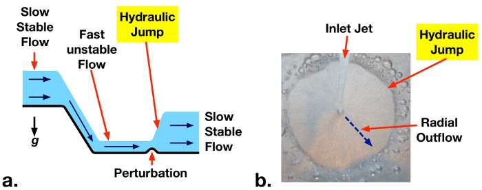
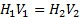
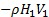
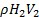
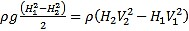
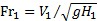
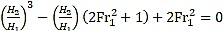
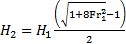
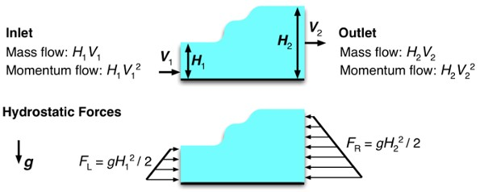

Cuando el líquido fluye a lo largo de un canal abierto a alta velocidad, el flujo puede volverse inestable, y disturbios leves pueden causar la superficie superior del líquido a transición abruptamente a un nivel superior (Fig. 1a). Este fuerte incremento en el nivel del líquido se llama un Salto hidráulico. El aumento en el nivel de líquido causa una reducción en la velocidad de flujo promedio. En consecuencia, energía cinética fluido potencialmente destructiva es disipada como calor. Saltos hidráulicos están diseñados deliberadamente en obras grandes, como aliviadero de la presa, para evitar daños y reducir la erosión que podría ser causada por corrientes de movimiento rápidos. Saltos hidráulicos también ocurren naturalmente en ríos y arroyos y pueden observarse en condiciones domésticas, como la salida radial de agua de un grifo en un lavabo (Fig. 1b).

Figura 1: a. hidráulico salto que ocurre aguas abajo de un vertedero debido a una perturbación ligera para un flujo inestable de alta velocidad. b. ejemplo de salto hidráulico en la salida radial de agua de un grifo doméstico.
En flujos de canal ancho abierto, líquido se limita sólo por un límite sólido inferior y su superficie superior está expuesto a la atmósfera. Un análisis del volumen de control se puede realizar en una sección de un flujo de canal abierto para equilibrar la entrada y salida de transporte de masa y momentum (Fig. 2). Si las velocidades se supone uniforme en la entrada y salida del volumen de control (V1 y V2 respectivamente) con correspondientes profundidades líquido H1 y H2, entonces una masa constante flujo de equilibrio reduce a:

(1)
El x-análisis del impulso de dirección de este control volumen equilibra las fuerzas de presión hidrostática (debido a la profundidad de líquido) con la entrada y salida impulsos caudales (ecuación. 2). Las fuerzas de presión actúan hacia el interior de los dos lados del volumen de control y son iguales a la gravedad específica del líquido (densidad líquido veces la aceleración de la gravedad: ρg), multiplicado por la profundidad media del líquido a cada lado (H12, H22), multiplica la altura sobre la cual la presión actúa sobre cada lado (H1, H2). Esto resulta en la expresión cuadrática en el lado izquierdo de la ecuación 2. Las tasas de flujo de momentum a través de cada lado (ecuación 2, derecha) son iguales a las tasas de flujo de masa de líquido a través del volumen de control (en: , hacia fuera:) multiplicado por las velocidades del fluido (V1, V2).
(2)
Ecuación. 1 puede ser sustituida en la ecuación. 2 para eliminar V2. El número de Froude ( ) puede también sustituirse, que representa la fuerza relativa del ímpetu fluido de entrada a las fuerzas hidrostáticas. La expresión resultante puede ser indicada como:
(3)
Esta ecuación cúbica tiene tres soluciones. Uno es H1 = H2, que da el comportamiento normal de canal abierto (profundidad de entrada = salida de profundidad). Una segunda solución da un nivel líquido negativo, que es incontrolado y puede ser eliminado. La solución restante permite un aumento en profundidad (Salto hidráulico) o una disminución de la profundidad (depresión hidráulica), dependiendo de la entrada del número de Froude. Si la entrada del número de Froude (Fr1) es mayor que uno, el flujo se denomina supercrítico (inestable) y tiene alta energía mecánica (cinética + gravitacional energía potencial). En este caso, un salto hidráulico puede formar espontáneamente o debido a alguna perturbación al flujo. El salto hidráulico disipa energía mecánica en calor, reduce la energía cinética y aumentando ligeramente la energía potencial del flujo. La altura resultante de salida es dada por la ecuación 4 (una solución a la ecuación 3). No puede ocurrir una depresión hidráulica si Fr1 > 1 porque aumentaría la energía mecánica del flujo, violando la segunda ley de la termodinámica.
(4)
La fuerza de saltos hidráulicos aumenta con la entrada de números de Froude. Fr1 aumenta, aumenta la magnitud de H2/H1 y una mayor parte de la energía cinética de entrada se disipa como calor [1].
Figura 2: Control de volumen de una parte de un flujo de canal abierto que contiene un salto hidráulico. Entrada y masa y ímpetu se indican las tasas de flujo por ancho de la unidad. Fuerzas hidrostáticas por ancho de la unidad indican en el diagrama inferior.
Los saltos hidráulicos se pueden clasificar, de acuerdo con el U.S. Bureau of Reclamation, de la siguiente forma, en función del número de Froude del flujo aguas arriba del salto (los límites indicados no marcan cortes nítidos, sino que se superponen en una cierta extensión dependiendo de las condiciones locales):
Para Fr = 1,0: el flujo es crítico, y no se forma ningún salto.
Para Fr > 1,0 y < 1,7: la superficie del agua muestra ondulaciones, y el salto es llamado salto ondular.
Para Fr > 1,7 y < 2,5: tenemos un salto débil. Este se caracteriza por la formación de pequeños rollos.
Para Fr > 2,5 y < 4,5: se produce un salto oscilante. Se produce un chorro oscilante entrando al salto del fondo a la superficie una y otra vez sin periodicidad. Cada oscilación produce una gran onda de período irregular que puede viajar varios kilómetros causando daños aguas abajo en bancos de tierra y márgenes.
Para Fr > 4,5 y < 9,0: se produce un salto llamado salto permanente. La extremidad aguas abajo del rollo de la superficie y el punto en el cual el chorro de alta velocidad tiende a dejar el flujo ocurre prácticamente en la misma sección vertical. La acción y posición de este salto son menos sensibles a la variación en la profundidad aguas abajo. El salto está bien balanceado y el rendimiento en la disipación de energía es el mejor, variando entre el 45 y el 70 %.
Para Fr = 9,0 o mayor: se produce el llamado salto fuerte. El chorro de alta velocidad choca con bloques de agua intermitentes que circulan aguas abajo, generando ondas aguas abajo, y puede prevalecer una superficie áspera. La efectividad del salto puede llegar al 85 %.
Cengel, Y. & Cimbala. J. (2018). Mecánica de Fluidos Fundamentos y Aplicaciones. (4 ed.), pág. 763. México: McGraw-Hill Education Global Holdings LLC
Ortega, J. (2019). 6. Salto Hidraulico - Apuntes 7. (1 ed). Recuperado de https://www.studocu.com/bo/document/universidad-autonoma-juan-misael-saracho/calculo/6-salto-hidraulico-apuntes-7/3267906
JoVE Science Education Database. (2022). Ingeniería mecánica Saltos hidráulicos. JoVE, Cambridge, MA. Recuperado de https://www.jove.com/es/v/10405/hydraulic-jumps?language=Spanish#:~:text=Un%20salto%20hidr%C3%A1ulico%20es%20un,media%20del%20flujo%20aguas%20abajo